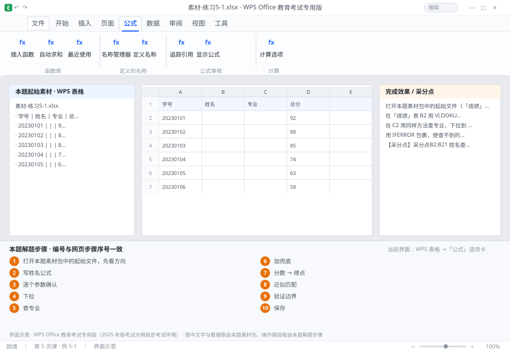

完成比对文档 · 例 5-1
VLOOKUP 精确查姓名专业 + IFERROR 兜底 + 近似匹配算绩点 ｜ 第 5 次课 / WPS 表格 ｜ 网页：实操-表格2.html ｜ 考试环境：WPS Office 教育考试专用版（2025 年版考试大纲指定考试环境）
用途 本页按修订后的题目要求与解题步骤生成，是交卷自查的结果基准：
逐项列出每一步应出现的可复核结果，配合模拟操作截图与解题结果文件使用。
它不是素材包的一部分，不会预置答案动作；起始素材仍从本题素材包下载。
一、本题起始素材包
目录：练习素材/练习5-1-查找引用函数/ ｜
下载包：练习素材/下载/练习5-1-查找引用函数.zip
二、题目要求
- 打开本题素材包中的起始文件（「成绩」表 A 列学号、B 列姓名（空）、C 列专业（空）、D 列总分；「学生信息」表 A 学号、B 姓名、C 专业）。
- 在「成绩」表 B2 用 VLOOKUP 精确匹配按学号查姓名，下拉到 B21。
- 在 C2 用同样方法查专业，下拉到 C21。查找区域必须绝对引用。
- 用 IFERROR 包裹，使查不到的学号显示「未找到」。
- 在 J1:K6 建立绩点对照表（0→0、60→1.0、70→2.0、80→3.0、90→4.0），在 F2 用近似匹配按总分返回绩点，下拉到 F21。
- 抽查 85 分的绩点应为 2.0（80 ≤ 85 < 90）。
- 保存为 学号-姓名-练习5-1.xlsx。
三、解题步骤（编号与下方核对表、截图编号一致）
- 打开本题素材包中的起始文件，先看方向。VLOOKUP 只能从左往右查：查找值必须位于查找区域的第 1 列。这里学号在两表都是 A 列，方向正确。
- 写姓名公式。B2 输入 =VLOOKUP($A2,学生信息!$A$2:$C$21,2,0) → Enter。
- 逐个参数确认。① 查找值 $A2：锁列不锁行，右拉时仍取学号列；② 区域 学生信息!$A$2:$C$21：跨表 + 全绝对，下拉不会漂移；③ 返回列号 2：从区域第 1 列（A 学号）数起，姓名是第 2 列；④ 匹配方式 0：精确匹配。
- 下拉。选中 B2 → 双击填充柄（或拖到 B21）。逐行检查是否有 #N/A。
- 查专业。C2 输入 =VLOOKUP($A2,学生信息!$A$2:$C$21,3,0) → 下拉。只有返回列号从 2 变成 3，其余不动。
- 加兜底。把 B2 改为 =IFERROR(VLOOKUP($A2,学生信息!$A$2:$C$21,2,0),"未找到") → 下拉。C2 同样处理。
- 建对照表。J1 输入「分数」、K1 输入「绩点」；J2:J6 依次 0、60、70、80、90；K2:K6 依次 0、1.0、2.0、3.0、4.0。首列必须升序，这是近似匹配的硬性前提。
- 近似匹配。F2 输入 =VLOOKUP(D2,$J$2:$K$6,2,1) → 下拉。第 4 参数 1（或 TRUE）表示「找不到精确值就取不超过它的最大值」。
- 验证边界。85 → 取 80 对应 2.0；90 → 取 90 对应 4.0；59 → 小于最小值，返回 #N/A（可用 IFERROR 兜成 0）。
- 保存。Ctrl+S。
四、完成效果 / 采分点
采分点B2:B21 姓名查找正确且区域绝对引用 · C2:C21 专业正确（返回列号 3） · 两列均有 IFERROR 兜底 · 近似匹配第 4 参数为 1 且对照表升序 · 85 分绩点为 2.0
五、逐项完成核对表
| 步骤 | 关键操作路径 | 应出现的结果（可复核） |
|---|
| 1 | 打开本题素材包中的起始文件，先看方向 | 打开本题素材包中的起始文件，先看方向 |
| 2 | 写姓名公式 | B2、=VLOOKUP(、A2 |
| 3 | 逐个参数确认 | A2 |
| 4 | 下拉 | B2、B21 |
| 5 | 查专业 | C2、=VLOOKUP(、A2 |
| 6 | 加兜底 | B2、=IFERROR(、A2、C2 |
| 7 | 建对照表 | J1、「分数」、K1、「绩点」、J2:J6 |
| 8 | 近似匹配 | F2、=VLOOKUP(、D2 |
| 9 | 验证边界 | 验证边界 |
| 10 | 保存 | 保存 |
六、模拟操作截图

界面示意 · WPS Office 教育考试专用版 · 橙色编号与本题解题步骤序号一致；
图中文字与数据取自本题素材包，功能入口取自本题解题步骤。
核对方法：按网页解题步骤完成并另存自己的成稿后，逐行比对本表第 3 列的
参数、公式、区域、文件名与对象数量；再对照网页「完成效果 / 采分点」检查版式是否一致。